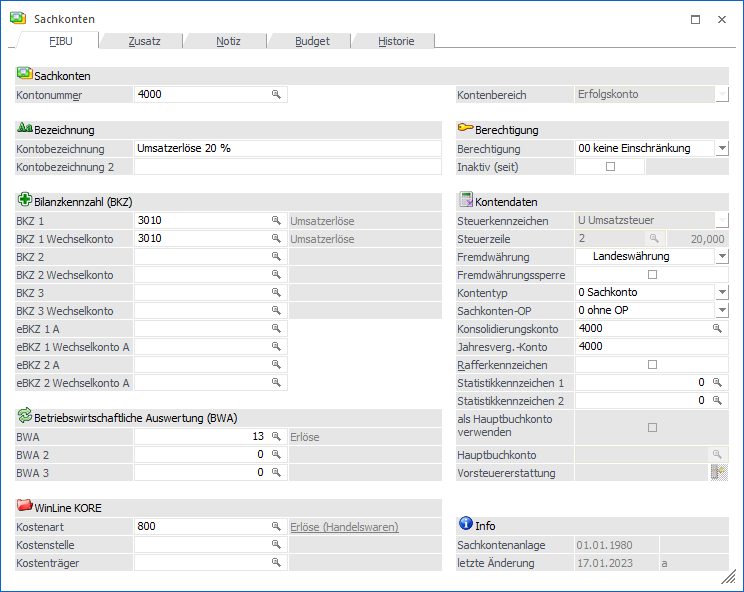
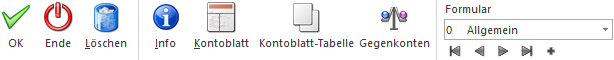

Im Menüpunkt
1 WinLine FIBU bzw. WinLine FAKT
1 Stammdaten
1 Sachkonten
können Sachkonten angelegt bzw. gewartet werden. Ob es sich bei dem Konto wiederum um einen "Bilanzkonto" oder ein "Erfolgskonto" handelt, wird während der Neuanlage definiert.
Vom Hauptfenster aus kann man zu allen untergeordneten Informationsbereichen weiter verzweigen, wie z.B. den Fibu-Daten, den Zusatz-Daten oder der Historie. Wenn die Sachkontonummer im Feld "Kontonummer" eingegeben wird, so gibt es mehrere mögliche Szenarien:
ü Die Kontonummer ist bereits
vorhanden
Es wird das Sachkonto mit allen entsprechenden Daten angezeigt.
ü Die Kontonummer ist noch nicht
vorhanden
Es wird die Neuanlage eines Sachkontos.
ü Die Kontonummer ist bereits
vorhanden, wird aber von einem anderen Benutzer bearbeitet
Die Audit-Ampel
stellt sich auf Rot und es erscheint eine entsprechende Hinweismeldung. Wird die
Meldung mit "Ja" bestätigt, dann kann eine neue Sachkontonummer eingegeben
werden. Bei einer Bestätigung von "Nein" erfolgt automatisch eine erneute
Abprüfung, ob sich der Datensatz noch in Bearbeitung befindet.

Der Sachkontenstamm ist in mehrere Register unterteilt, welche in den nachfolgenden Kapiteln detailliert beschrieben werden:
ü Register "FIBU"
In dem Register
"FIBU" des Sachkontos werden alle wesentlichen Informationen verwaltet, welche
speziell die Finanzbuchhaltung betreffen.
ü Register "Zusatz"
Im Register
"Zusatz" können Zusatzfelder und Eigenschaften des Sachkontos hinterlegt
werden.
ü Register "Notiz"
In dem Register
"Notiz" kann eine Zusatzinformation in Form eines Notizblockes hinterlegt
werden.
ü Register "Budget"
In dem Register
"Budget" kann für jedes Sachkonto ein wertmäßiges Budget erfasst werden.
ü Register "Historie"
In dem Register
"Historie" wird der "Verlauf" des Personenkonten angezeigt.
Buttons

Ø Ok
Durch Anwahl des Buttons "Ok" bzw. der Taste F5 werden die vorgenommenen Änderungen bzw. die Neuanlage abgespeichert.
Hinweis 1
Durch die Tastenkombination SHIFT + F5 erfolgt eine Zwischenspeicherung des Sachkontos.
Hinweis 2
Über die FIBU-Applikationsparameter (Programm WinLine START, Menüpunkt Parameter/Applikations-Parameter) kann eingestellt werden, ob neu angelegte bzw. geänderte Konten in Vor- oder Folgewirtschaftsjahre übernommen werden sollen. Diese Übernahme kann entweder automatisch oder manuell erfolgen. Wenn die Übernahme manuell erfolgen soll, so wird beim Speichern des Kontos das Fenster "Konto aktualisieren" geöffnet, wo die Wirtschaftsjahre ausgewählt werden können, auf die Änderungen bzw. das neue Konto "kopiert" werden sollen.
Ø Ende
Bei Anwahl des Buttons "Ende" bzw. der Taste ESC wird der Programmbereich verlassen und alle nicht gespeicherten Änderungen verworfen.
Ø Löschen
Durch Anklicken des Buttons "Löschen" wird das aktuelle Sachkonto gelöscht. Voraussetzung hierfür ist, dass das Konto nicht bebucht ist und auch sonst nicht mehr verwendet wird (z.B. Skontokonto einer Steuerzeile).
Ø Info
Durch Anwahl des "Info"-Buttons wird die "Konteninfo" geöffnet. An dieser Stelle erhält man detaillierte Informationen zu dem angelegten Sachkonto (z.B. Monatsumsätze, Salden, etc.). Drückt man während der Anwahl des Buttons die SHIFT-Taste, so wird die "Sachkonteninformation" in der Applikation WinLine INFO geöffnet. Dieser Button ist auch mittels den Shortcuts ALT + i (öffnet die "Konteninfo" in WinLine FAKT) oder SHIFT + ALT + i (öffnet die "Sachkonteninformation" in WinLine INFO) anwählbar.
Ø Kontoblatt
Durch Anklicken des Buttons "Kontoblatt" wird das Kontoblatt zu diesem Konto angezeigt, wobei das Kontoblatt ohne weitere Einschränkungen ausgegeben wird.
Ø Kontoblatt Tabelle
Durch Anklicken dieses Buttons wird das Kontoblatt ohne weitere Einschränkungen als Tabelle ausgegeben.
Ø Gegenkonten
Über den Button "Gegenkonten" wird das Fenster "Gegenkonten / Vorschlag bearbeiten" geöffnet. Hier werden die definierten Gegenkonten für das geladene Konto angezeigt und können editiert werden.
Ø Formular
Über die Auswahlbox "Formular" kann gewählt werden, in welcher Form der Stammdatensatz bearbeitet werden soll. Wenn die Option "0 - Allgemein" gewählt wird, dann wird wieder in die "Normalansicht" mit allen Eingabefeldern zurückgeschalten.
Hinweis
Die Definition der Formulare für die individuelle Gestaltung erfolgt im Programm WinLine START über den Menüpunkt "Vorlagen - Vorlagen Anlage - Individuelle Formulare".
Ø VCR-Buttons
Über die so genannten VCR-Buttons, welche in jedem Register zur Verfügung stehen, kann durch Mausklick zwischen den Datensätzen geblättert werden.
ü  Damit kann der erste Datensatz angesprochen werden.
Damit kann der erste Datensatz angesprochen werden.
ü  Damit kann der vorherige Datensatz angesprochen werden.
Damit kann der vorherige Datensatz angesprochen werden.
ü  Damit kann der nächste Datensatz angesprochen werden.
Damit kann der nächste Datensatz angesprochen werden.
ü  Damit kann der letzte Datensatz angesprochen werden.
Damit kann der letzte Datensatz angesprochen werden.
ü  Damit wird die nächste freie Nummer für die Neuanlage gesucht (nur im Register
"Stamm").
Damit wird die nächste freie Nummer für die Neuanlage gesucht (nur im Register
"Stamm").